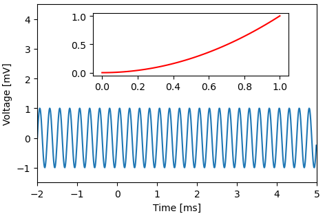
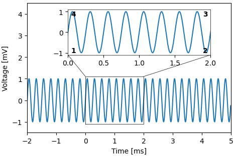

Module plottools.insets
Insets made easy.
Axes member functions
inset(): add an inset in relative axes coordinates.
zoomed_inset(): add an inset for displaying zoomed-in data.
Install/uninstall insets functions
You usually do not need to call these functions. Upon loading the insets
module, install_insets() is called automatically.
install_insets(): install functions of the insets module in matplotlib.uninstall_insets(): uninstall all code of the insets module from matplotlib.
Expand source code
"""
Insets made easy.
## Axes member functions
- `inset()`: add an inset in relative axes coordinates.

- `zoomed_inset()`: add an inset for displaying zoomed-in data.

## Install/uninstall insets functions
You usually do not need to call these functions. Upon loading the insets
module, `install_insets()` is called automatically.
- `install_insets()`: install functions of the insets module in matplotlib.
- `uninstall_insets()`: uninstall all code of the insets module from matplotlib.
"""
import numpy as np
import matplotlib as mpl
import matplotlib.pyplot as plt
def inset(ax, *pos):
"""
Add an inset in relative axes coordinates.
Parameters
----------
ax: matplotlib axes
Axes to which the inset is added.
pos: sequence of floats
Position of the inset in axes coordinates (x0, y0, x1, y1),
each ranging between 0 and 1 for position inside `ax`.
Returns
-------
axi: matplotlib axes
Axes of the inset.
Examples
--------
```py
import matplotlib.pyplot as plt
import plottools.insets
fig, ax = plt.subplots()
x = np.arange(-2.0, 5.0, 0.01)
y = np.sin(2.0*np.pi*4.0*x)
ax.plot(x, y)
ax.set_xlim(-2.0, 5.0)
ax.set_xlabel('Time [ms]')
ax.set_ylim(-1.5, 4.5)
ax.set_ylabel('Voltage [mV]')
axi = ax.inset(0.2, 0.6, 0.9, 0.95)
x = np.linspace(0, 1, 50)
axi.plot(x, x**2, 'r')
plt.show()
```

"""
# inset:
x0, y0, width, height = ax.get_position().bounds
if len(pos) == 1:
pos = pos[0]
axi = ax.get_figure().add_axes([x0+pos[0]*width, y0+pos[1]*height,
(pos[2]-pos[0])*width,
(pos[3]-pos[1])*height])
return axi
def zoomed_inset(ax, pos, box, lines=None, **kwargs):
"""
Add an inset for displaying zoomed-in data.
The limits of the inset are set according to `box`. Additionally
a frame is drawn around the zoomed-in region and optionally
lines connecting the zoommed-in region with the inset.
Do not change the limits of `ax` after calling this function.
Parameters
----------
ax: matplotlib axes
Axes to which the inset is added.
pos: sequence of floats
Position of the inset in axes coordinates (x0, y0, x1, y1),
each ranging between 0 and 1 for position inside `ax`.
box: sequence of floats
Zoomed in region in data coordinates (x0, y0, x1, y1)
used for drawing a frame and setting the limits of the inset.
lines: sequence of two-tuples
Additional lines to be drawn from the zoomed-in region to the inset.
Each element in the list specifies a line by a tuple of two numbers.
The first number specifies the corner on the zoomed region
where the line starts, the second number the corner on the
inset where the line ends. The corners are counted anti-clockwise and
the bottom left corner has index '1'.
kwargs:
Passed on to ax.plot() for plotting the box around the zoomed-in region.
If not otherwise specified, color is set to black and linewidth to one.
Returns
-------
axi: matplotlib axes
Axes of the inset.
Examples
--------
```py
import matplotlib.pyplot as plt
import plottools.insets
fig, ax = plt.subplots()
x = np.arange(-2.0, 5.0, 0.01)
y = np.sin(2.0*np.pi*4.0*x)
ax.plot(x, y)
ax.set_xlim(-2.0, 5.0)
ax.set_xlabel('Time [ms]')
ax.set_ylim(-1.5, 4.5)
ax.set_ylabel('Voltage [mV]')
axi = ax.zoomed_inset([0.2, 0.6, 0.9, 0.95], [0.0, -1.1, 2.0, 1.1],
[(4, 1), (3, 2)], lw=0.5)
axi.plot(x, y)
plt.show()
```

"""
# inset:
axi = ax.inset(pos)
# box to data coordinates:
xmin, xmax = ax.get_xlim()
ymin, ymax = ax.get_ylim()
pos = np.array(pos)
pos[0::2] *= np.abs(xmax - xmin)
pos[0::2] += min(xmin, xmax)
pos[1::2] *= np.abs(ymax - ymin)
pos[1::2] += min(ymin, ymax)
# drawing style for lines:
if not 'c' in kwargs and not 'color' in kwargs:
kwargs['c'] = 'k'
if not 'lw' in kwargs and not 'linewidth' in kwargs:
kwargs['lw'] = 1.0
lw = kwargs['lw']
# inset limits:
axi.set_xlim(box[0], box[2])
axi.set_ylim(box[1], box[3])
# linewidth of inset spines:
for s in axi.spines.values():
s.set_linewidth(lw)
# draw zoomed box:
ax.plot([box[0], box[0], box[2], box[2], box[0]],
[box[1], box[3], box[3], box[1], box[1]],
clip_on=False, **kwargs)
# connecting lines:
if lines is not None:
for p0, p1 in lines:
p0 = (p0-1)%4
p1 = (p1-1)%4
x = [box[(((p0+1)%4)//2)*2], pos[(((p1+1)%4)//2)*2]]
y = [box[1+(p0//2)*2], pos[1+(p1//2)*2]]
ax.plot(x, y, clip_on=False, **kwargs)
return axi
def install_insets():
""" Install insets functions on matplotlib axes.
This makes `inset()` and `zoomed_inset()` available as member functions
for matplib axes.
This function is called automatically upon importing the module.
See also
--------
uninstall_insets()
"""
if not hasattr(mpl.axes.Axes, 'inset'):
mpl.axes.Axes.inset = inset
if not hasattr(mpl.axes.Axes, 'zoomed_inset'):
mpl.axes.Axes.zoomed_inset = zoomed_inset
def uninstall_insets():
""" Uninstall insets functions from matplotlib axes.
Call this code to disable anything that was installed by `install_insets()`.
See also
--------
install_insets()
"""
if hasattr(mpl.axes.Axes, 'inset'):
delattr(mpl.axes.Axes, 'inset')
if hasattr(mpl.axes.Axes, 'zoomed_inset'):
delattr(mpl.axes.Axes, 'zoomed_inset')
install_insets()
def demo():
""" Run a demonstration of the insets module.
"""
def label_corners(ax):
ax.text(0.02, 0.02, '1', ha='left', va='bottom', fontweight='bold', transform=ax.transAxes)
ax.text(0.98, 0.02, '2', ha='right', va='bottom', fontweight='bold', transform=ax.transAxes)
ax.text(0.98, 0.98, '3', ha='right', va='top', fontweight='bold', transform=ax.transAxes)
ax.text(0.02, 0.98, '4', ha='left', va='top', fontweight='bold', transform=ax.transAxes)
fig, ax = plt.subplots()
fig.suptitle('plottools.insets')
x = np.arange(-2.0, 5.0, 0.01)
y = np.sin(2.0*np.pi*4.0*x)
ax.plot(x, y)
ax.set_xlim(-2.0, 5.0)
ax.set_ylim(-1.5, 4.5)
ax.set_xlabel('Time [s]')
axi = ax.zoomed_inset((0.1, 0.6, 0.9, 0.95), (0.0, -1.0, 2.0, 1.0),
((4, 1), (3, 2)), lw=0.5)
axi.plot(x, y)
label_corners(axi)
plt.show()
if __name__ == "__main__":
demo()Functions
def inset(ax, *pos)-
Add an inset in relative axes coordinates.
Parameters
ax:matplotlib axes- Axes to which the inset is added.
pos:sequenceoffloats- Position of the inset in axes coordinates (x0, y0, x1, y1),
each ranging between 0 and 1 for position inside
ax.
Returns
axi:matplotlib axes- Axes of the inset.
Examples
import matplotlib.pyplot as plt import plottools.insets fig, ax = plt.subplots() x = np.arange(-2.0, 5.0, 0.01) y = np.sin(2.0*np.pi*4.0*x) ax.plot(x, y) ax.set_xlim(-2.0, 5.0) ax.set_xlabel('Time [ms]') ax.set_ylim(-1.5, 4.5) ax.set_ylabel('Voltage [mV]') axi = ax.inset(0.2, 0.6, 0.9, 0.95) x = np.linspace(0, 1, 50) axi.plot(x, x**2, 'r') plt.show()Expand source code
def inset(ax, *pos): """ Add an inset in relative axes coordinates. Parameters ---------- ax: matplotlib axes Axes to which the inset is added. pos: sequence of floats Position of the inset in axes coordinates (x0, y0, x1, y1), each ranging between 0 and 1 for position inside `ax`. Returns ------- axi: matplotlib axes Axes of the inset. Examples -------- ```py import matplotlib.pyplot as plt import plottools.insets fig, ax = plt.subplots() x = np.arange(-2.0, 5.0, 0.01) y = np.sin(2.0*np.pi*4.0*x) ax.plot(x, y) ax.set_xlim(-2.0, 5.0) ax.set_xlabel('Time [ms]') ax.set_ylim(-1.5, 4.5) ax.set_ylabel('Voltage [mV]') axi = ax.inset(0.2, 0.6, 0.9, 0.95) x = np.linspace(0, 1, 50) axi.plot(x, x**2, 'r') plt.show() ```  """ # inset: x0, y0, width, height = ax.get_position().bounds if len(pos) == 1: pos = pos[0] axi = ax.get_figure().add_axes([x0+pos[0]*width, y0+pos[1]*height, (pos[2]-pos[0])*width, (pos[3]-pos[1])*height]) return axi def zoomed_inset(ax, pos, box, lines=None, **kwargs)-
Add an inset for displaying zoomed-in data.
The limits of the inset are set according to
box. Additionally a frame is drawn around the zoomed-in region and optionally lines connecting the zoommed-in region with the inset.Do not change the limits of
axafter calling this function.Parameters
ax:matplotlib axes- Axes to which the inset is added.
pos:sequenceoffloats- Position of the inset in axes coordinates (x0, y0, x1, y1),
each ranging between 0 and 1 for position inside
ax. box:sequenceoffloats- Zoomed in region in data coordinates (x0, y0, x1, y1) used for drawing a frame and setting the limits of the inset.
lines:sequenceoftwo-tuples- Additional lines to be drawn from the zoomed-in region to the inset. Each element in the list specifies a line by a tuple of two numbers. The first number specifies the corner on the zoomed region where the line starts, the second number the corner on the inset where the line ends. The corners are counted anti-clockwise and the bottom left corner has index '1'.
kwargs: Passed on to ax.plot() for plotting the box around the zoomed-in region. If not otherwise specified, color is set to black and linewidth to one.
Returns
axi:matplotlib axes- Axes of the inset.
Examples
import matplotlib.pyplot as plt import plottools.insets fig, ax = plt.subplots() x = np.arange(-2.0, 5.0, 0.01) y = np.sin(2.0*np.pi*4.0*x) ax.plot(x, y) ax.set_xlim(-2.0, 5.0) ax.set_xlabel('Time [ms]') ax.set_ylim(-1.5, 4.5) ax.set_ylabel('Voltage [mV]') axi = ax.zoomed_inset([0.2, 0.6, 0.9, 0.95], [0.0, -1.1, 2.0, 1.1], [(4, 1), (3, 2)], lw=0.5) axi.plot(x, y) plt.show()Expand source code
def zoomed_inset(ax, pos, box, lines=None, **kwargs): """ Add an inset for displaying zoomed-in data. The limits of the inset are set according to `box`. Additionally a frame is drawn around the zoomed-in region and optionally lines connecting the zoommed-in region with the inset. Do not change the limits of `ax` after calling this function. Parameters ---------- ax: matplotlib axes Axes to which the inset is added. pos: sequence of floats Position of the inset in axes coordinates (x0, y0, x1, y1), each ranging between 0 and 1 for position inside `ax`. box: sequence of floats Zoomed in region in data coordinates (x0, y0, x1, y1) used for drawing a frame and setting the limits of the inset. lines: sequence of two-tuples Additional lines to be drawn from the zoomed-in region to the inset. Each element in the list specifies a line by a tuple of two numbers. The first number specifies the corner on the zoomed region where the line starts, the second number the corner on the inset where the line ends. The corners are counted anti-clockwise and the bottom left corner has index '1'. kwargs: Passed on to ax.plot() for plotting the box around the zoomed-in region. If not otherwise specified, color is set to black and linewidth to one. Returns ------- axi: matplotlib axes Axes of the inset. Examples -------- ```py import matplotlib.pyplot as plt import plottools.insets fig, ax = plt.subplots() x = np.arange(-2.0, 5.0, 0.01) y = np.sin(2.0*np.pi*4.0*x) ax.plot(x, y) ax.set_xlim(-2.0, 5.0) ax.set_xlabel('Time [ms]') ax.set_ylim(-1.5, 4.5) ax.set_ylabel('Voltage [mV]') axi = ax.zoomed_inset([0.2, 0.6, 0.9, 0.95], [0.0, -1.1, 2.0, 1.1], [(4, 1), (3, 2)], lw=0.5) axi.plot(x, y) plt.show() ```  """ # inset: axi = ax.inset(pos) # box to data coordinates: xmin, xmax = ax.get_xlim() ymin, ymax = ax.get_ylim() pos = np.array(pos) pos[0::2] *= np.abs(xmax - xmin) pos[0::2] += min(xmin, xmax) pos[1::2] *= np.abs(ymax - ymin) pos[1::2] += min(ymin, ymax) # drawing style for lines: if not 'c' in kwargs and not 'color' in kwargs: kwargs['c'] = 'k' if not 'lw' in kwargs and not 'linewidth' in kwargs: kwargs['lw'] = 1.0 lw = kwargs['lw'] # inset limits: axi.set_xlim(box[0], box[2]) axi.set_ylim(box[1], box[3]) # linewidth of inset spines: for s in axi.spines.values(): s.set_linewidth(lw) # draw zoomed box: ax.plot([box[0], box[0], box[2], box[2], box[0]], [box[1], box[3], box[3], box[1], box[1]], clip_on=False, **kwargs) # connecting lines: if lines is not None: for p0, p1 in lines: p0 = (p0-1)%4 p1 = (p1-1)%4 x = [box[(((p0+1)%4)//2)*2], pos[(((p1+1)%4)//2)*2]] y = [box[1+(p0//2)*2], pos[1+(p1//2)*2]] ax.plot(x, y, clip_on=False, **kwargs) return axi def install_insets()-
Install insets functions on matplotlib axes.
This makes
inset()andzoomed_inset()available as member functions for matplib axes.This function is called automatically upon importing the module.
See Also
Expand source code
def install_insets(): """ Install insets functions on matplotlib axes. This makes `inset()` and `zoomed_inset()` available as member functions for matplib axes. This function is called automatically upon importing the module. See also -------- uninstall_insets() """ if not hasattr(mpl.axes.Axes, 'inset'): mpl.axes.Axes.inset = inset if not hasattr(mpl.axes.Axes, 'zoomed_inset'): mpl.axes.Axes.zoomed_inset = zoomed_inset def uninstall_insets()-
Uninstall insets functions from matplotlib axes.
Call this code to disable anything that was installed by
install_insets().See Also
Expand source code
def uninstall_insets(): """ Uninstall insets functions from matplotlib axes. Call this code to disable anything that was installed by `install_insets()`. See also -------- install_insets() """ if hasattr(mpl.axes.Axes, 'inset'): delattr(mpl.axes.Axes, 'inset') if hasattr(mpl.axes.Axes, 'zoomed_inset'): delattr(mpl.axes.Axes, 'zoomed_inset') def demo()-
Run a demonstration of the insets module.
Expand source code
def demo(): """ Run a demonstration of the insets module. """ def label_corners(ax): ax.text(0.02, 0.02, '1', ha='left', va='bottom', fontweight='bold', transform=ax.transAxes) ax.text(0.98, 0.02, '2', ha='right', va='bottom', fontweight='bold', transform=ax.transAxes) ax.text(0.98, 0.98, '3', ha='right', va='top', fontweight='bold', transform=ax.transAxes) ax.text(0.02, 0.98, '4', ha='left', va='top', fontweight='bold', transform=ax.transAxes) fig, ax = plt.subplots() fig.suptitle('plottools.insets') x = np.arange(-2.0, 5.0, 0.01) y = np.sin(2.0*np.pi*4.0*x) ax.plot(x, y) ax.set_xlim(-2.0, 5.0) ax.set_ylim(-1.5, 4.5) ax.set_xlabel('Time [s]') axi = ax.zoomed_inset((0.1, 0.6, 0.9, 0.95), (0.0, -1.0, 2.0, 1.0), ((4, 1), (3, 2)), lw=0.5) axi.plot(x, y) label_corners(axi) plt.show()